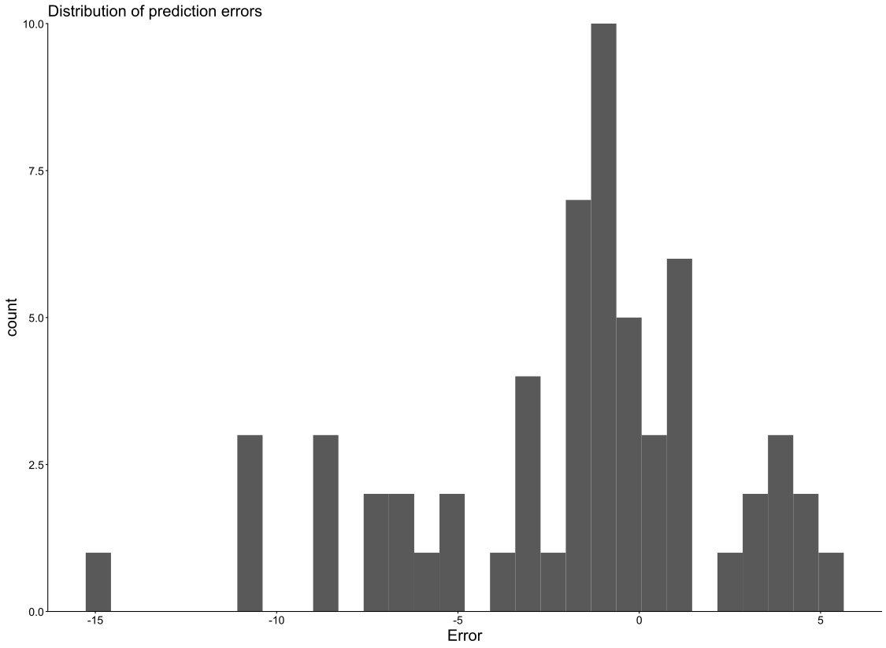
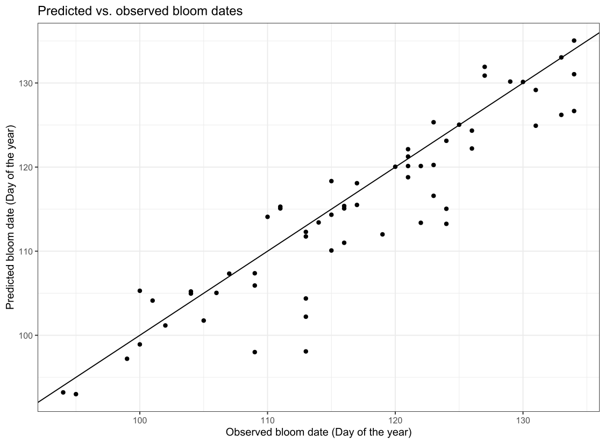

28 Chapter 30 - The PhenoFlex model
In this chapter I worked with the PhenoFlex phenology model, which combines chilling accumulation and heat accumulation to predict bloom dates of temperate fruit trees. The goal was to parameterize the model for the cultivar Roter Boskoop, generate predictions of bloom dates, and evaluate model performance using different error metrics. The chapter helped me understand how phenology models can integrate biological processes such as dormancy release and heat accumulation.
One of the main challenges for me was understanding the large number of parameters in the model and how they influence the predictions. Parameterization required fitting the model to observed bloom data and interpreting the solver results. Another challenge was interpreting the model evaluation metrics (RMSEP, mean error and mean absolute error) and assessing how well the model reproduces observed bloom dates. Overall, the chapter helped me understand how phenology models can be calibrated and evaluated using real temperature and phenology data.
28.1 Questions
Parameterize the PhenoFlex model for `Roter Boskoop’ apples.
Produce plots of predicted vs. observed bloom dates and distribution of prediction errors.
Compute the model performance metrics RMSEP, mean error and mean absolute error.
28.2 Answers
Parameters for “Roter Boskoop” dataset
| X | x |
|---|---|
| 1 | 3.945790e+01 |
| 2 | 1.955518e+02 |
| 3 | 3.217589e-01 |
| 4 | 2.500000e+01 |
| 5 | 3.372800e+03 |
| 6 | 9.900300e+03 |
| 7 | 6.187399e+03 |
| 8 | 5.939931e+13 |
| 9 | 4.978583e+00 |
| 10 | 3.006917e+01 |
| 11 | 4.000000e+00 |
| 12 | 2.494781e+00 |
Plots

Figure 28.1: The histogram shows the distribution of differences between predicted and observed bloom dates. Most prediction errors are centered around zero, indicating that the model reproduces observed bloom dates with relatively small deviations.

Figure 28.2: Each point represents one season. The diagonal line indicates perfect agreement between predicted and observed bloom dates. The close clustering of points around the line suggests that the PhenoFlex model predicts bloom timing with good accuracy.
Statistical Errors
RMSEP:
The RMSEP (Root Mean Square Error of Prediction) describes the overall prediction accuracy of the model. In this analysis the RMSEP was 4.69, which is lower than the value reported in the chapter example (about 6.1). This indicates that the PhenoFlex model reproduces the observed bloom dates of Roter Boskoop apples with a high level of accuracy.
Mean Error:
The mean error describes the average bias of the model predictions. In this case the mean error was −1.92, meaning that the model predicts bloom dates on average about two days earlier than the observed dates. This bias is relatively small and indicates that the model predictions are generally well balanced.
Mean Absolute Error:
The mean absolute error represents the average absolute deviation between predicted and observed bloom dates. In this analysis the value was 3.34 days, which is lower than the value reported in the chapter example (4.62 days). This suggests that the model predictions are typically only a few days away from the observed bloom dates, indicating good model performance.
28.3 Code
library(chillR)
library(tidyverse)
CKA_weather <- read_tab("data/TMaxTMin1958-2019_patched.csv")
hourtemps <- stack_hourly_temps(CKA_weather,
latitude = 50.6)
yc <- 40
zc <- 190
iSeason <- genSeason(hourtemps,
mrange = c(8, 6),
years = c(2009))
season_data <- hourtemps$hourtemps[iSeason[[1]],]
res <- PhenoFlex(temp = season_data$Temp,
times = c(1: length(season_data$Temp)),
zc = zc,
stopatzc = TRUE,
yc = yc,
basic_output = FALSE)
# Plot
DBreakDay <- res$bloomindex
seasontemps <- hourtemps$hourtemps[iSeason[[1]],]
seasontemps[,"x"] <- res$x
seasontemps[,"y"] <- res$y
seasontemps[,"z"] <- res$z
seasontemps <- add_date(seasontemps)
CR_full <- seasontemps$Date[which(seasontemps$y >= yc)[1]]
Bloom <- seasontemps$Date[which(seasontemps$z >= zc)[1]]
chillplot <- ggplot(data = seasontemps[1:DBreakDay,],
aes(x = Date,
y = y)) +
geom_line(col = "blue",
lwd = 1.5) +
theme_bw(base_size = 20) +
geom_hline(yintercept = yc,
lty = 2,
col = "blue",
lwd = 1.2) +
geom_vline(xintercept = CR_full,
lty = 3,
col = "blue",
lwd = 1.2) +
ylab("Chill accumulation (y)") +
labs(title = "Chilling") +
annotate("text",
label = "Chill req. (yc)",
x = ISOdate(2008,10,01),
y = yc*1.1,
col = "blue",
size = 5)
heatplot <- ggplot(data = seasontemps[1:DBreakDay,],
aes(x = Date,
y = z)) +
geom_line(col = "red",
lwd = 1.5) +
theme_bw(base_size = 20) +
scale_y_continuous(position = "right") +
geom_hline(yintercept = zc,
lty = 2,
col = "red",
lwd = 1.2) +
geom_vline(xintercept = CR_full,
lty = 3,
col = "blue",
lwd = 1.2) +
geom_vline(xintercept = Bloom,
lty = 3,
col = "red",
lwd = 1.2) +
ylab("Heat accumulation (z)") +
labs(title = "Forcing") +
annotate("text",
label = "Heat req. (zc)",
x = ISOdate(2008,10,01),
y = zc*0.95,
col = "red",
size = 5)
library(patchwork)
chillplot + heatplot
# Lineplot
yc <- 40
zc <- 190
seasons <- 1959:2019
iSeason <- genSeason(hourtemps,
mrange = c(8, 6),
years = seasons)
for (sea in 1:length(seasons))
{season_data <- hourtemps$hourtemps[iSeason[[sea]], ]
res <- PhenoFlex(temp = season_data$Temp,
times = c(1: length(season_data$Temp)),
zc = zc,
stopatzc = TRUE,
yc = yc,
basic_output = FALSE)
if(sea == 1)
results <- season_data$DATE[res$bloomindex] else
results <- c(results,
season_data$DATE[res$bloomindex])}
predictions <- data.frame(Season = seasons,
Prediction = results)
predictions$Prediction <-
ISOdate(2001,
substr(predictions$Prediction, 4, 5),
substr(predictions$Prediction, 1, 2))
ggplot(data = predictions,
aes(x = Season,
y = Prediction)) +
geom_smooth() +
geom_point() +
ylab("Predicted bloom date") +
theme_bw(base_size = 15)
# Try to fit
Alex_first <-
read_tab("data/Roter_Boskoop_bloom_1958_2019.csv") %>%
select(Pheno_year, First_bloom) %>%
mutate(Year = as.numeric(substr(First_bloom, 1, 4)),
Month = as.numeric(substr(First_bloom, 5, 6)),
Day = as.numeric(substr(First_bloom, 7, 8))) %>%
make_JDay() %>%
select(Pheno_year, JDay) %>%
rename(Year = Pheno_year,
pheno = JDay)
hourtemps <-
read_tab("data/TMaxTMin1958-2019_patched.csv") %>%
stack_hourly_temps(latitude = 50.6)
# Parameters from helpfile
# here's the order of the parameters (from the helpfile of the
# PhenoFlex_GDHwrapper function)
# yc, zc, s1, Tu, E0, E1, A0, A1, Tf, Tc, Tb, slope
par <- c(40, 190, 0.5, 25, 3372.8, 9900.3, 6319.5,
5.939917e13, 4, 36, 4, 1.60)
upper <- c(41, 200, 1.0, 30, 4000.0, 10000.0, 7000.0,
6.e13, 10, 40, 10, 50.00)
lower <- c(38, 180, 0.1, 0 , 3000.0, 9000.0, 6000.0,
5.e13, 0, 0, 0, 0.05)
# Season list
SeasonList <- genSeasonList(hourtemps$hourtemps,
mrange = c(8, 6),
years = c(1959:2018))
Fit_res <-
phenologyFitter(par.guess = par,
modelfn = PhenoFlex_GDHwrapper,
bloomJDays = Alex_first$pheno[which(Alex_first$Year > 1958)],
SeasonList = SeasonList,
lower = lower,
upper = upper,
control = list(smooth = FALSE,
verbose = FALSE,
maxit = 1000,
nb.stop.improvement = 5))
Alex_par <- Fit_res$par
write.csv(Alex_par,
"data/PhenoFlex_parameters_Roter_Boskoop.csv")
# getting the param
Alex_par <-
read_tab("data/PhenoFlex_parameters_Roter_Boskoop.csv")[,2]
SeasonList <- genSeasonList(hourtemps$hourtemps,
mrange = c(8, 6),
years = c(1959:2019))
Alex_PhenoFlex_predictions <- Alex_first[which(Alex_first$Year > 1958),]
for(y in 1:length(Alex_PhenoFlex_predictions$Year))
Alex_PhenoFlex_predictions$predicted[y] <-
PhenoFlex_GDHwrapper(SeasonList[[y]],
Alex_par)
Alex_PhenoFlex_predictions$Error <-
Alex_PhenoFlex_predictions$predicted -
Alex_PhenoFlex_predictions$pheno
RMSEP(Alex_PhenoFlex_predictions$predicted,
Alex_PhenoFlex_predictions$pheno)
mean(Alex_PhenoFlex_predictions$Error)
mean(abs(Alex_PhenoFlex_predictions$Error))
# Plotting
ggplot(Alex_PhenoFlex_predictions,
aes(x = pheno,
y = predicted)) +
geom_point() +
geom_abline(intercept = 0,
slope = 1) +
theme_bw(base_size = 15) +
xlab("Observed bloom date (Day of the year)") +
ylab("Predicted bloom date (Day of the year)") +
ggtitle("Predicted vs. observed bloom dates")
# Histogramm
ggplot(Alex_PhenoFlex_predictions,
aes(Error)) +
geom_histogram() +
ggtitle("Distribution of prediction errors")
# Getting RMSE
Alex_PhenoFlex_predictions$Error <-
Alex_PhenoFlex_predictions$predicted -
Alex_PhenoFlex_predictions$pheno
RMSEP(Alex_PhenoFlex_predictions$predicted,
Alex_PhenoFlex_predictions$pheno)
mean(Alex_PhenoFlex_predictions$Error)
mean(abs(Alex_PhenoFlex_predictions$Error))
# Plotting
ggplot(Alex_PhenoFlex_predictions,
aes(x = pheno,
y = predicted)) +
geom_point() +
geom_abline(intercept = 0,
slope = 1) +
theme_bw(base_size = 20) +
xlab("Observed bloom date (Day of the year)") +
ylab("Predicted bloom date (Day of the year)") +
ggtitle("Predicted vs. observed bloom dates")
# Plotting Errors
ggplot(Alex_PhenoFlex_predictions,
aes(Error)) +
geom_histogram() +
ggtitle("Distribution of prediction errors") +
scale_y_continuous(limits = c(0, NA), expand = c(0,0)) +
theme_classic() +
theme(plot.title = element_text(size = 20)) +
theme(
axis.title.x = element_text(size = 20),
axis.title.y = element_text(size = 20)
) +
theme(axis.text = element_text(size = 14))